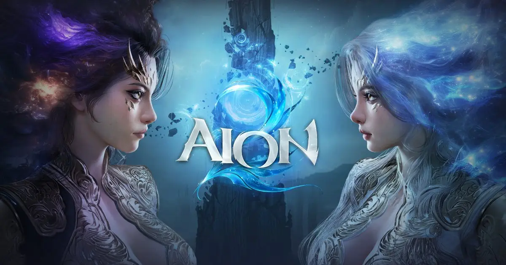
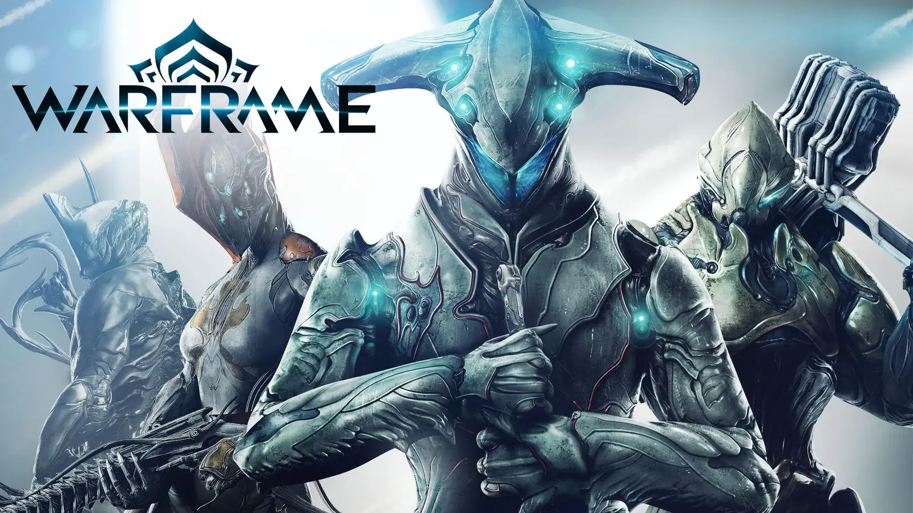
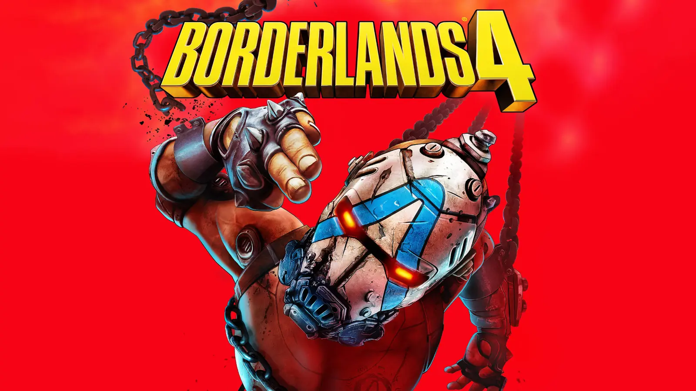
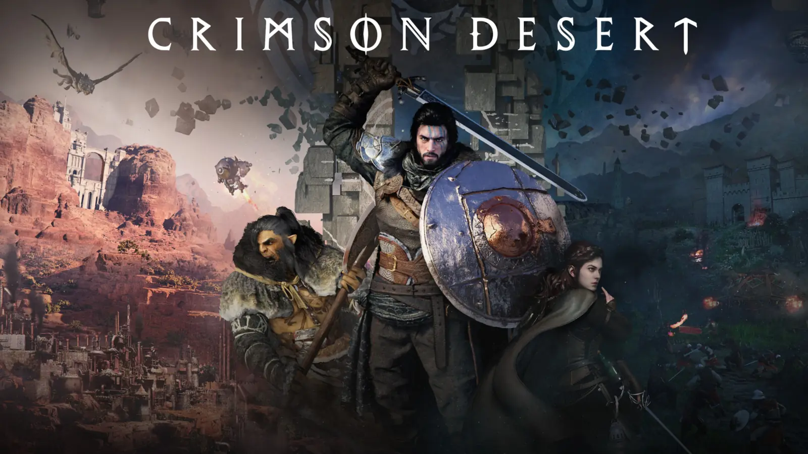
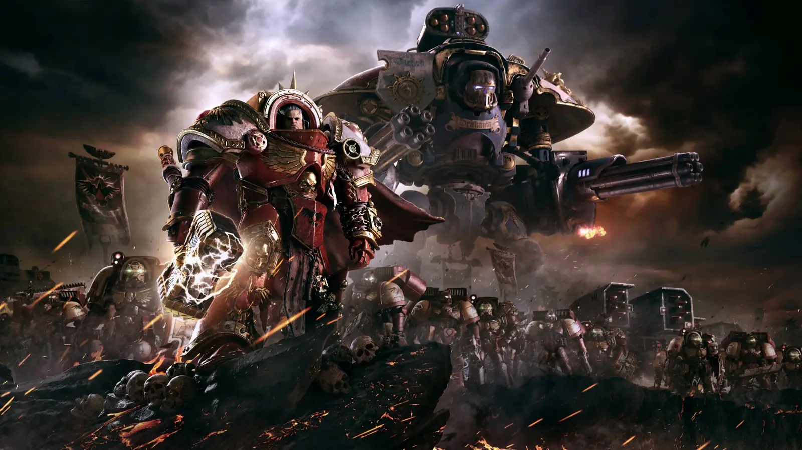
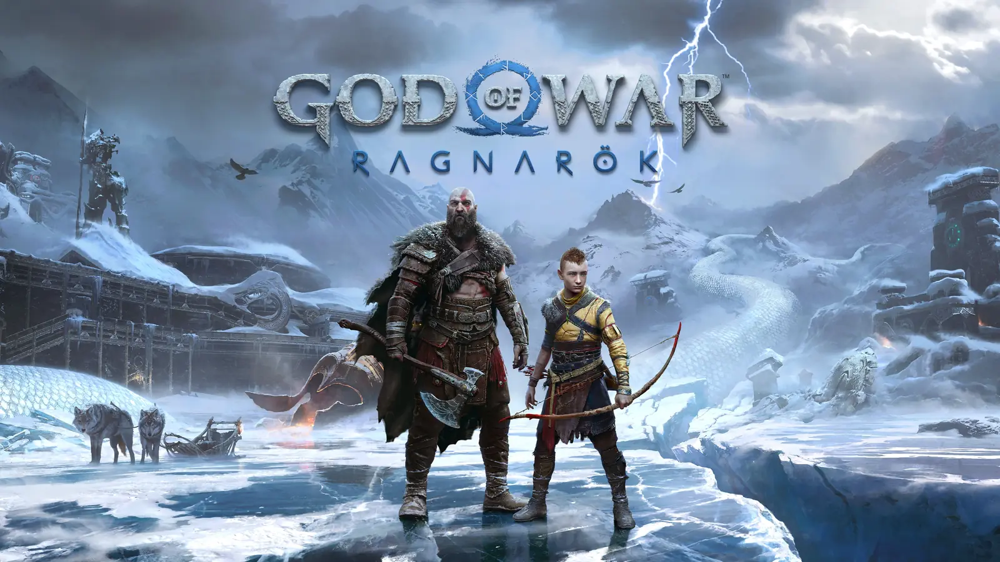

Playing now
AION 2
Search any AION 2 character in five regions. See their gear, skills and Daevanion boards, and what to do next.
Enter The AetheriumIf you play it, we can build it.
Streaming live from inside the Paradox

Playing now
Search any AION 2 character in five regions. See their gear, skills and Daevanion boards, and what to do next.
Enter The AetheriumReviewed 5.5/10
A solid step, not a triumphant leap. The world behind The Forge.
Open The Forge


Savage combat, deep lore, a world that punishes the weak and rewards the relentless.
See the universe
A wall of Tyranids in front of you, a chainsword in your hand, and nowhere to retreat.
See the universe
One of the best combat systems ever built, wrapped around a story that earns its emotional beats.
See the universeTwenty-five years in. Still playing.
Pick the universes you follow on Discord and only those channels show up.